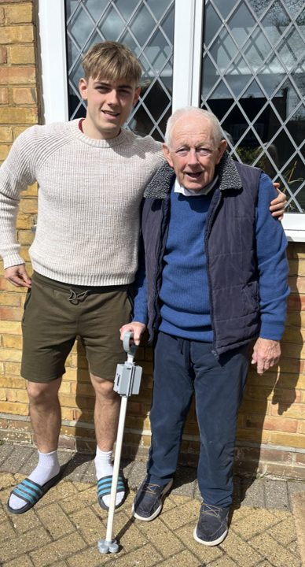
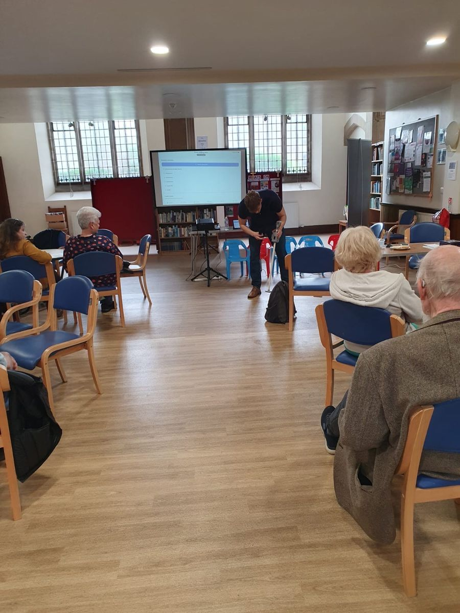

Why I built the Smart Walking Stick
Every engineering project starts somewhere. For me, it started at home, watching my grandfather.
It started with my grandad
My grandfather lives with Parkinson's disease. Watching him face the daily challenges it brings, the unpredictability of freezing episodes, the loss of independence, the quiet frustration of a body that doesn't always respond the way it should, was what first made me want to do something about it.
When it came to choosing my final year dissertation project, this felt like the only choice. I didn't want to design something abstract for the sake of an academic exercise. I wanted to build something that could genuinely make a difference to his life, and to the lives of the millions of other people around the world living with Parkinson's every day.
That feeling, of wanting to build something that actually helps, has driven every decision in this project from the very beginning.

What Freezing of Gait actually is
Freezing of Gait is one of the most debilitating symptoms of Parkinson's disease. The brain sends the signal to walk, but the feet suddenly fail to respond, as if glued to the floor. Episodes strike without warning: in a doorway, at a kerb, mid-conversation. They raise the risk of falls and, over time, chip away at a person's confidence to move independently at all.
What makes it so compelling as an engineering problem is that an evidence-based response already exists. Research consistently shows that providing an external rhythm, whether auditory, haptic or visual, can help people with Parkinson's break out of a freeze and restore their walking cadence. Clinicians call this external cueing.
A gap engineering could fill
As a Mechanical Engineer, I was taught to solve problems. And Freezing of Gait is a problem with a real, evidence-based solution available: multimodal cueing.
The science is there. The clinical evidence is there. What isn't there, for most patients, is an affordable, compact, all-in-one device that delivers all three types of cue in a familiar, everyday walking stick form factor.
Existing devices that do offer multimodal cueing, like the Rollz Motion Rollator, are expensive, bulky and designed for people who already need a walking frame. There is a clear gap for something more accessible, more independent and more practical for earlier-stage Parkinson's patients who still use a walking stick.
That gap felt like exactly the kind of problem an engineer should try to solve.
I didn't want to design something abstract for the sake of an academic exercise. I wanted to build something that could genuinely make a difference.
It wasn't always straightforward
Building the Smart Walking Stick meant hardware failures, software bugs, wiring problems and more late nights than I can count. Each problem left a lesson behind.
From breadboard to PCB
The tangle of breadboard wiring was fragile and failure-prone, so I designed a custom printed circuit board that consolidates every connection onto a single board sitting directly on the Pi's header.
Listen to the users
Patients found the red laser hard to see under indoor lighting, so future iterations will use a green laser. The best design feedback came from the people the stick is for.
Don't depend on a phone
In the middle of a freezing episode, reaching for a screen isn't realistic. That single insight from patient feedback is shaping Prototype 2, which puts physical buttons on the stick itself.
Three things kept me going
The people it was for. Every time I thought about why I was doing this, my grandfather and the millions of others like him, the frustration of a difficult day felt very small by comparison.
The response from patients. Presenting the prototype to the Parkinson's UK Southend support group in April 2026 was one of the most meaningful experiences of my engineering career so far. Seeing real people engage with the device, feel the vibration in the handle, hear the beat, and tell me it was something they would genuinely want to use: that was everything.
The belief that engineering should matter. I became an engineer because I wanted to build things that make a difference. The Smart Walking Stick is the clearest expression of that belief I have found so far.

The second chapter
The prototype works. The feedback has been overwhelmingly positive. Parkinson's UK and PD Buddy have both encouraged me to push further. And there is a whole second chapter of this project still to write: automated detection, clinical trials, a better device, and hopefully one day a product that can reach the people who need it.
This project started because of my grandfather. It continues because of everyone with Parkinson's who deserves better tools to live with more independence and confidence every day.
Follow the project, or say hello
If you are a clinician, researcher, funder or part of a Parkinson's organisation, or you simply want to follow along, I would genuinely love to hear from you. There is no mailing list and no form: just send me an email.